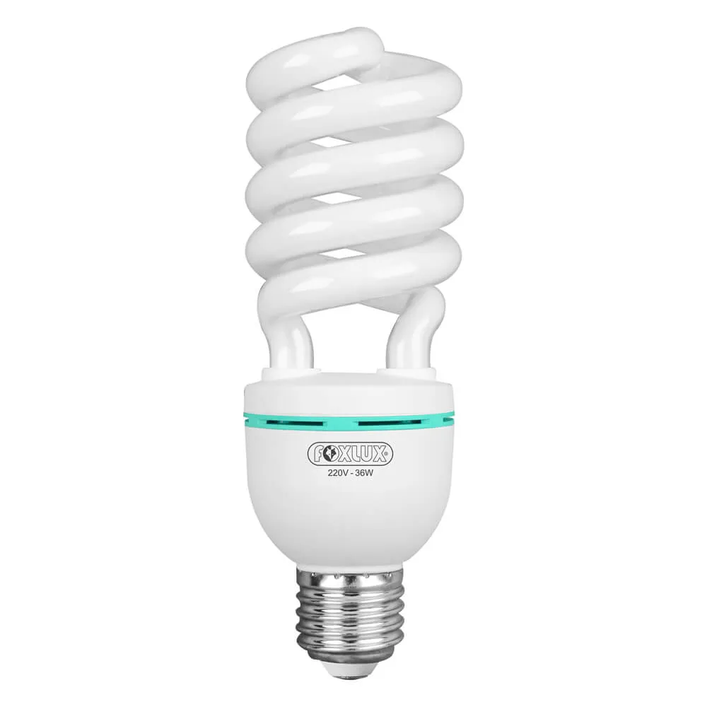
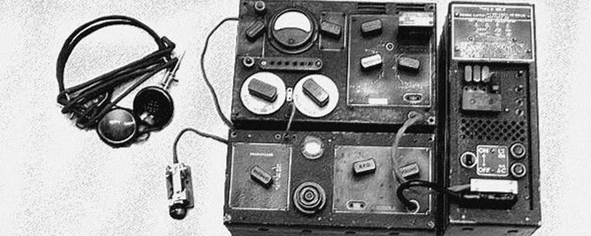
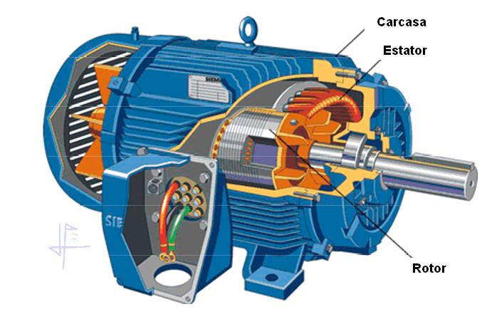
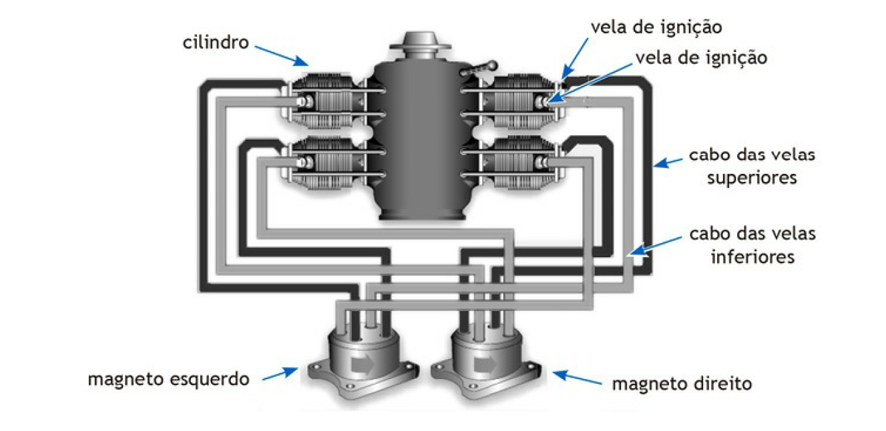
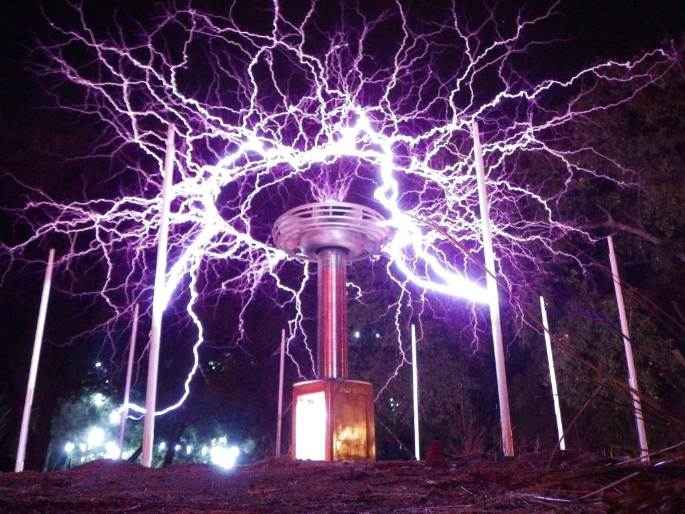

INVENÇOES DE NIKOLAS TESLA
Nikola Tesla foi um grande inventor e seus estudos estiveram voltados para áreas de engenharia mecânica
Seus principais contributos estão relacionados com a tecnologia e a robótica.
Durante sua vida trabalhou incessantemente e no total Tesla possui cerca de 700
patentes. De suas maiores invenções destacam-se:
Lâmpada fluorescente

Transmissão via rádio

Controle remoto

Motor de indução

Sistema de Ignição

Bobina de Tesla
